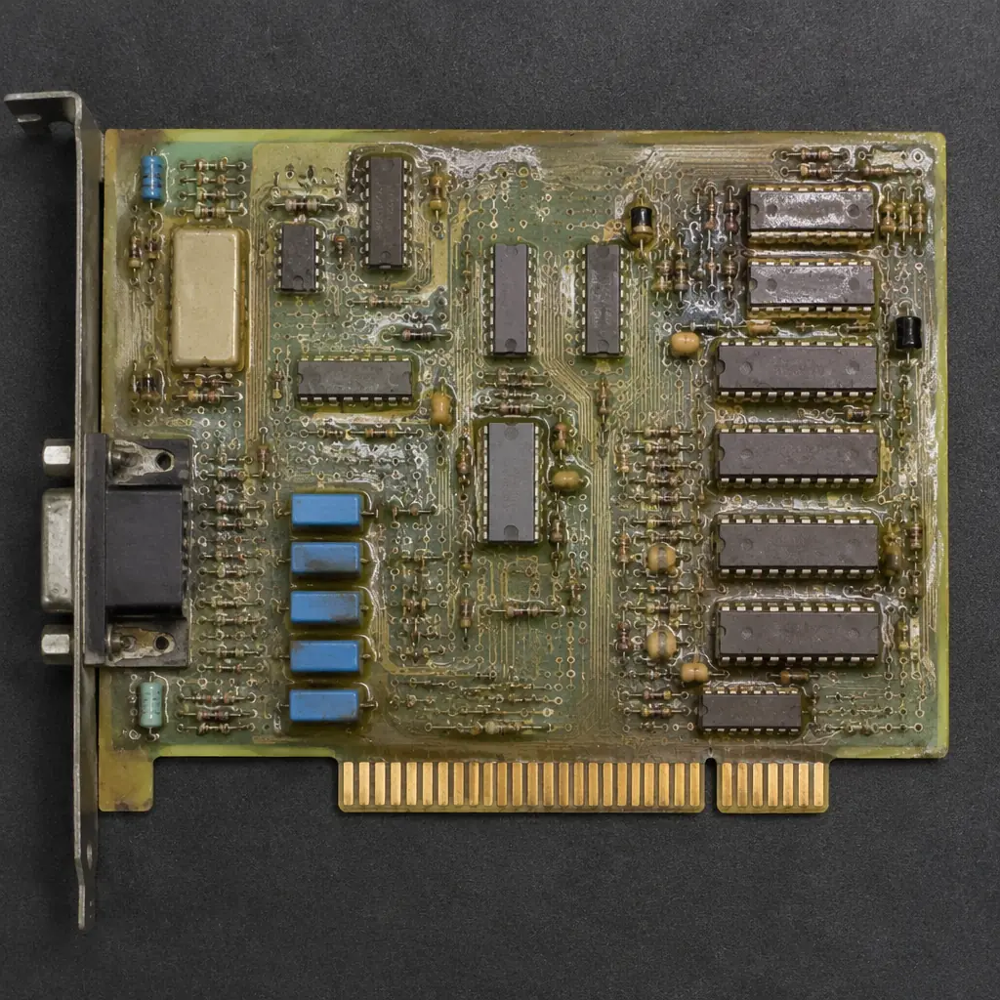
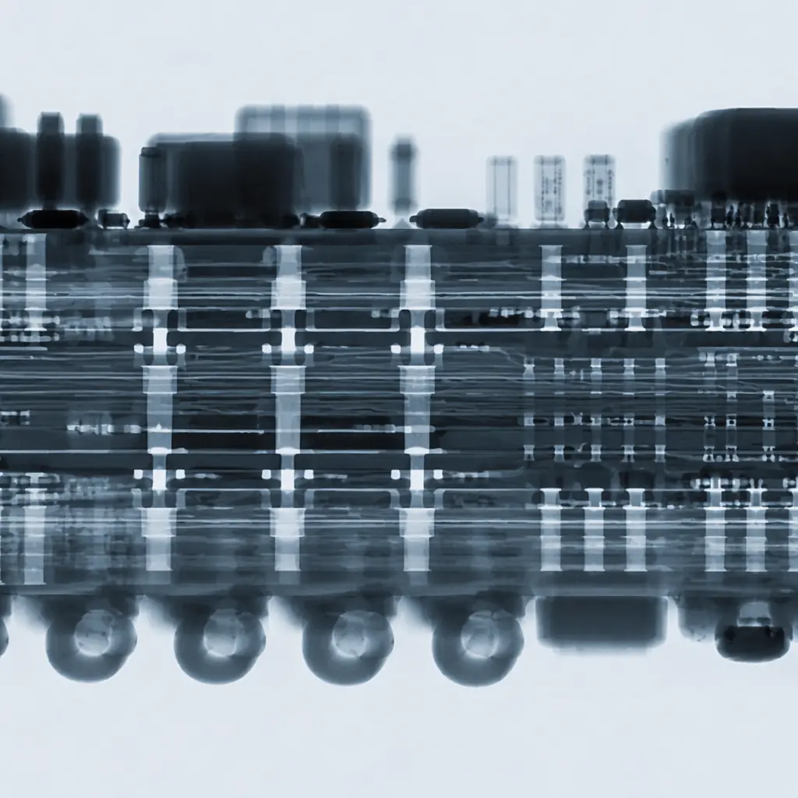
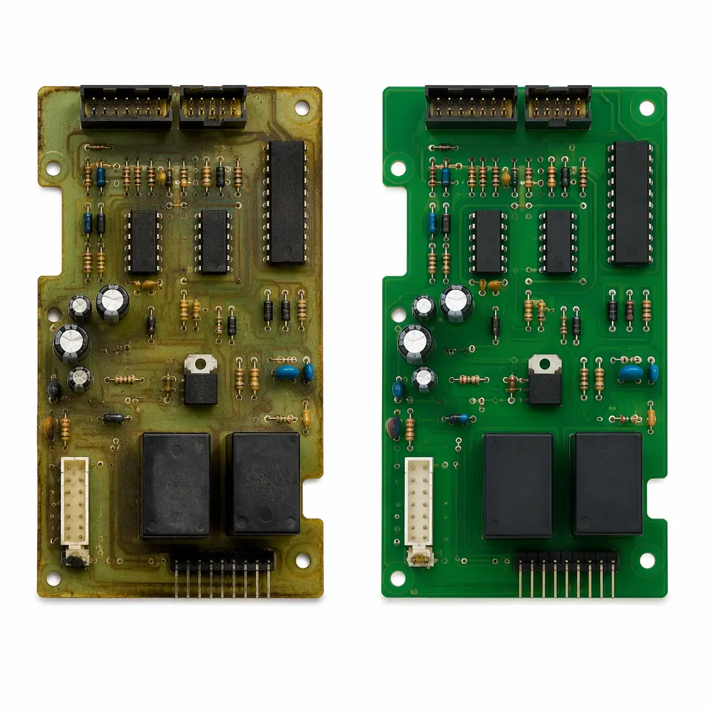

Every product manager responsible for equipment with a 15-30 year field life eventually faces the same crisis: the original PCB is no longer manufactured, the OEM has gone out of business or declared the board "end-of-life," and the remaining stock is dwindling. We see this daily in industrial automation (PLCs and motor drives from the 1990s), medical imaging (CT/MRI subsystem boards discontinued after 7 years), rail signaling (1980s-2000s era control boards), aerospace (avionics LRUs with 30-year sustainment requirements), and semiconductor manufacturing equipment where OEMs charge 5-10× the original price for "last-time buy" boards. PCB reverse engineering recreates these boards — electrically identical, mechanically compatible, and manufactured to current IPC standards — typically at 30-50% of the OEM's end-of-life pricing.
When Reverse Engineering Is the Right Solution
Reverse engineering is not the first option. Before committing, verify that these cheaper alternatives are exhausted:
Check OEM Availability First
Contact the OEM directly. If the board is still available, even at a premium, buying original stock is always faster and cheaper than reverse engineering. Only when the OEM confirms EOL with no replacement — or the price exceeds 5× historical cost — does reverse engineering become the rational choice.
Search the Secondary Market
Brokers like Classic Components, Component Sense, or specialized industrial surplus dealers often hold new-old-stock (NOS) of discontinued boards. We've seen clients spend $25,000 on reverse engineering only to discover 50 NOS units available at $800 each. A 30-minute broker search can save months of engineering effort.
Assess Repair vs. Replicate
If the failure mode is limited to specific components — electrolytic capacitors, relays, connectors — board-level repair may extend life for 3-5 years at 10-20% of reverse engineering cost. Only when failures are systemic (delamination, multiple component obsolescence, corroded traces) does full replication become the answer.

The Reverse Engineering Process: 7 Steps From Physical Board to Production-Ready Replacement
Board Inspection & Documentation
The donor board is photographed at 600+ DPI on both sides. We document board dimensions, mounting hole positions, connector placements, and any mechanical features (edge connectors, card guides, heatsink mounting points). If the board has conformal coating, we remove it chemically — never mechanically (which risks lifting pads).
Component Identification & BOM Regeneration
Every component is identified by its marking code, package type, and electrical measurement. Where markings are illegible or absent, we use a combination of X-ray (for internal structure of ICs), curve tracing (for discrete semiconductors), and LCR measurement (for passives) to determine the component. The output is a complete BOM with manufacturer part numbers, alternates where original parts are obsolete, and lifecycle status (active/NRND/EOL) for every line item. This is the highest-risk step: misidentifying a custom-programmed IC or a proprietary ASIC as a standard part dooms the project. If we suspect a component is custom, we flag it and request the client's engineering input.
Netlist Extraction & Schematic Capture
Using continuity testing and the component identification data, we map every electrical connection on the board. For 2-layer boards, this is straightforward — optical inspection + continuity probing. For multilayer boards (4+), we use a combination of non-destructive X-ray CT scanning and controlled-delamination (layer-by-layer peeling with photographic documentation) to map inner layer connections. The output is a complete schematic in Altium, KiCad, or your preferred EDA format.
PCB Layout Recreation (Gerber Regeneration)
From the netlist and board scans, we recreate the PCB layout — trace routing, plane shapes, via sizes and positions, solder mask openings, and silkscreen. Controlled impedance traces (USB, Ethernet, DDR memory) are re-engineered from physical measurements: trace width, dielectric thickness, and copper weight determine the impedance, which we validate with TDR measurement on the donor board to confirm our stackup model.
Component Obsolescence Resolution
Inevitably, some original components will be obsolete. For each obsolete part, we propose one of three solutions: (a) form-fit-function drop-in replacement from another manufacturer, (b) functionally equivalent part requiring minor PCB layout changes (different package, different pinout), or (c) redesign of the sub-circuit using currently available components while maintaining identical electrical performance. The client approves every substitution before fabrication.
First-Article Fabrication & Assembly
We fabricate 5-10 first-article boards using the regenerated Gerber files and assembled BOM. Every board undergoes 100% AOI, X-ray for BGAs, and ICT/flying probe testing to verify netlist matching against the donor board's extracted netlist — confirming that every electrical connection is correct before functional testing begins.
Functional Validation & Acceptance Testing
First-article boards are tested in the actual equipment they're designed to replace. We work to the client's acceptance test procedure (ATP) — if you don't have an ATP, our engineers will draft one based on the equipment's functional specifications. The final deliverable includes: Gerber files, schematic, BOM, assembly drawings, test report, and 5 validated first-article boards.

Legal & IP Considerations: What You Need to Know
Reverse engineering for interoperability and repair is legal in most jurisdictions, but the boundaries vary. Here is the landscape as of 2026:
| Jurisdiction | Reverse Engineering for Repair/Interoperability | Key Limitation |
|---|---|---|
| United States | Legal under "fair use" (17 USC § 107) and Sega v. Accolade precedent for interoperability. DMCA anti-circumvention provisions have repair exemptions for certain equipment categories. | Cannot circumvent encryption or copy-protection measures. Custom-programmed ICs (FPGAs, microcontrollers with locked firmware) cannot be cloned without violating DMCA. |
| European Union | Legal under Directive 2009/24/EC (software interoperability) and broader repair rights recognized in consumer protection law. | Must be for "interoperability" — reverse engineering to create a competing product (not a replacement) may infringe. |
| China | Permitted for "study and research" purposes under Patent Law Article 69 and for repair/restoration of purchased equipment. | Cannot reproduce design protected by active patent. We require the client to confirm the board is either not patent-protected or that any relevant patents have expired. |
| Rest of World | Varies significantly. Australia, Canada, and Japan have repair-friendly frameworks. Some countries restrict reverse engineering in government/military contracts. | Military and ITAR-controlled equipment requires client to confirm export authorization. Huaxing does not reverse engineer ITAR-controlled boards without end-user documentation. |
What Reverse Engineering Cannot Do
Managing expectations is critical. Here are the hard limitations:

Cost Structure: What to Budget
| Phase | 2-Layer Simple Digital | 4-6 Layer Mixed-Signal | 8-12 Layer Complex/High-Speed |
|---|---|---|---|
| Engineering NRE (schematic capture + layout) | $1,500-3,000 | $3,500-7,000 | $8,000-18,000 |
| Component identification & BOM | $500-1,000 | $1,000-2,000 | $1,500-4,000 |
| First-article fabrication (5 units) | $300-800 | $800-2,000 | $1,500-5,000 |
| First-article assembly & test | $500-1,200 | $1,200-2,500 | $2,000-5,000 |
| Functional validation (ATP execution) | $800-1,500 | $1,500-3,000 | $2,500-6,000 |
| Total NRE (approximate) | $3,600-7,500 | $8,000-16,500 | $15,500-38,000 |
| Production unit cost (100+ qty) | $8-25/unit | $30-80/unit | $80-250/unit |
Real-World Example: Industrial Motor Drive Controller Board
In 2024, a European packaging machinery manufacturer approached us with a crisis: their SEW Eurodrive servo controller board (part discontinued 2018) was failing in 12 of 85 installed machines. The OEM's recommended "solution" was a $45,000 retrofit kit per machine — replacing not just the board but the entire drive system.
Donor Board Analysis
6-layer board, 180×120mm, mixed digital (DSP controller) + analog (current sensing, gate drive) + power (IGBT gate drive transformer). Two programmable devices: a locked TI DSP and an Altera CPLD.
Obsolescence Issues Found
8 components obsolete — including the main DSP (TMS320F240, discontinued 2012) and a specialty optocoupler. We proposed a TMS320F28069 upgrade (pin-compatible package, requires firmware recompilation with updated register map) and a functionally equivalent Broadcom optocoupler.
Client's Engineering Input Required
The DSP firmware was recompiled by the client's engineering team. The CPLD (not locked — rare!) was read out with a JTAG programmer and the configuration was replicated to a functionally identical Lattice device.
Result
Total NRE: $9,800. First-article delivered in 7 weeks. Production units: $62 each at 200-unit order. Total solution cost: $22,200 — vs. $540,000 for the OEM retrofit. The replacement boards have been running for 18 months with zero field failures.
Huaxing PCBA Reverse Engineering Capabilities
| Capability | Specification |
|---|---|
| Max board complexity | 32 layers with blind, buried, and microvias |
| Layer stack analysis | X-ray CT scanning + controlled delamination with photographic documentation |
| Min trace/space | 3/3 mil (75/75μm) |
| Impedance control | 50Ω/90Ω/100Ω differential pairs — TDR validated against donor board |
| Component identification | Optical marking decode, X-ray for internal IC structure, curve trace for discretes, LCR for passives |
| EDA output formats | Altium, KiCad, OrCAD, PADS, Eagle |
| BOM regeneration | Full manufacturer P/N with lifecycle status, RoHS/REACH compliance, and 3 alternate sources where available |
| FPGA/CPLD handling | JTAG readout if unlocked; footprint-compatible board with unprogrammed device if locked |
| Firmware handling | We do NOT extract firmware. Client provides binary or programs devices after assembly. |
| Acceptance test | Netlist comparison vs donor, functional test in target equipment per client ATP |
| Certifications for replacement boards | IPC-A-600 Class 2 & 3, J-STD-001, ISO 9001:2015 |